Introduction
Overview
El-MAVEN, our open source LC-MS data processing engine is optimized for isotopomer labeling and untargeted metabolomic profiling experiments. You can view the mass spectra, align chromatograms, perform peak-feature detection and alignment for labeled and unlabeled MS data. FirstView enables you to have a first look at your data using basic visualizations to get preliminary insights.
Scope of the App
- Provides visualizations for both labeled and unlabeled data
- Provides visualizations on both raw and log2 transformed intensities
- View intensity plot for each metabolite
- View Isotope plot for each metabolite in case of labeled data
- View heat map for the entire dataset
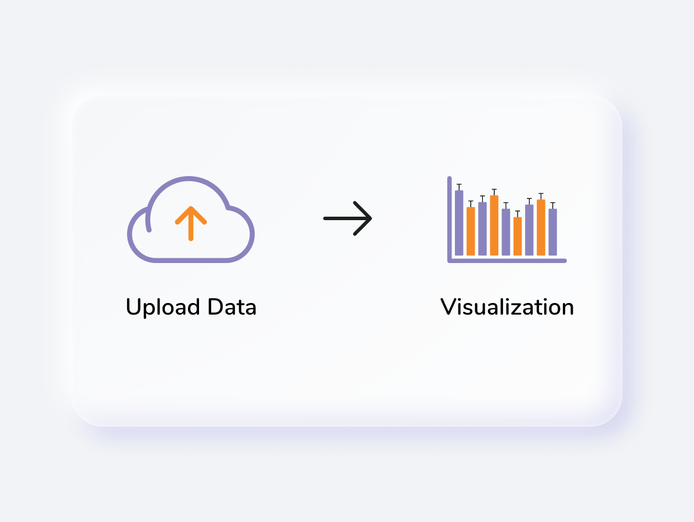
Getting Started
User Input
There are two ways to upload files to FirstView:
El-MAVEN FirstView interface
It allows you to directly push El-MAVEN output to FirstView as shown in Figure 2.
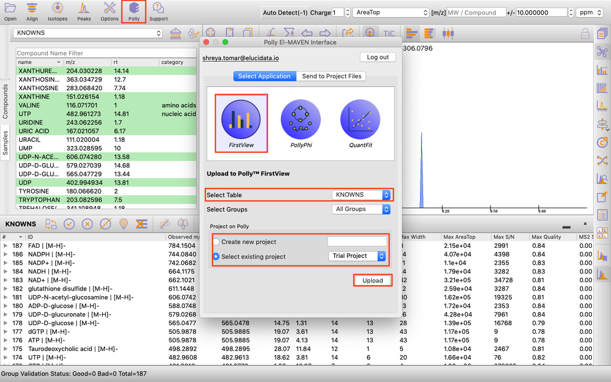
Application upload interface
To use FirstView from Polly, you only require the El-MAVEN Output file:
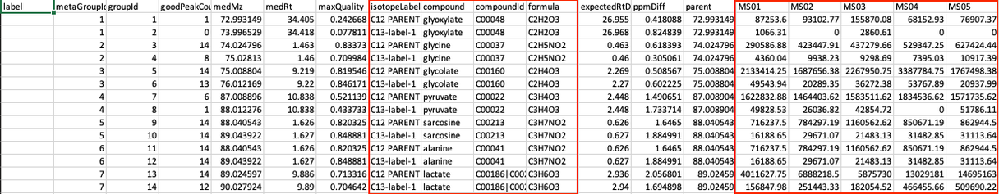
Steps in data processing
- Upload data to FirstView
- Visualize the intensity plot for each metabolite
- Visualize the isotope plot for each metabolite
- Visualize the heat map for the entire dataset
Caveats
- The El-MAVEN output should be generated using a compound database
- For labeled data, the intensities in the Isotope Plot are NOT corrected for natural abundance
- Log2 Transformation does not change the Isotope Plot
- For unlabeled data, the Isotope Plot section will be blank
Tutorial
Upload files
El-MAVEN FirstView Interface
Once you have derived a peak table containing the list of metabolites. You can click on the Polly Icon at the Menu Bar to export the data directly to PollyTM FirstView. Provide your Polly login credentials and a window will pop-up which allows you to select the peak table to be uploaded to FirstView. You can select the workspace from the list of your existing Polly Workspaces or choose to create a new one from this menu itself and then click on Upload. Once the files are uploaded, click on Go to FirstView and you would be redirected to FirstView.
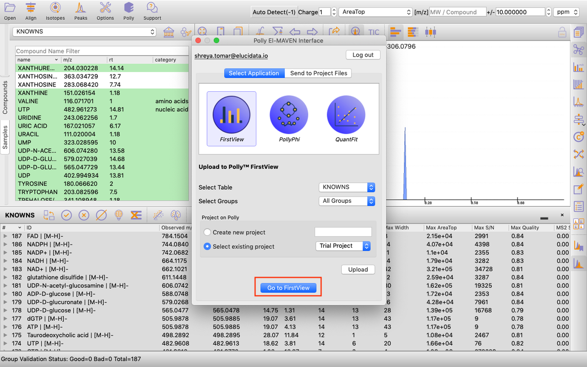
Application upload interface
Alternatively, select FirstView from the dashboard under the Metabolomics Data Tab.
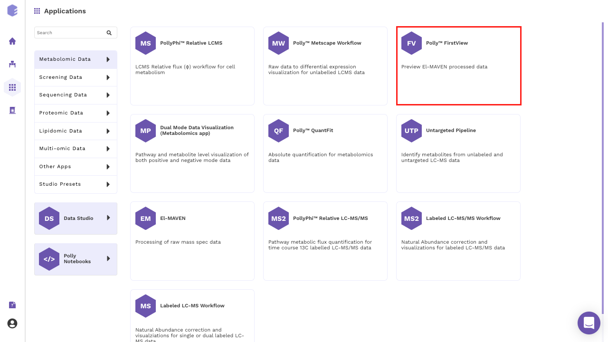
Create a New Workspace or choose the existing one from the drop down and provide the Name of the Session to be redirected to FirstView's upload page as shown in Figure 6.
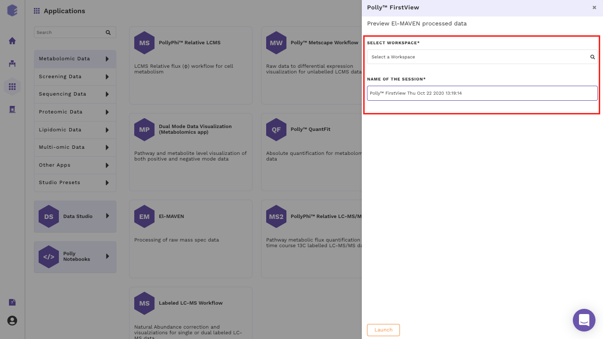
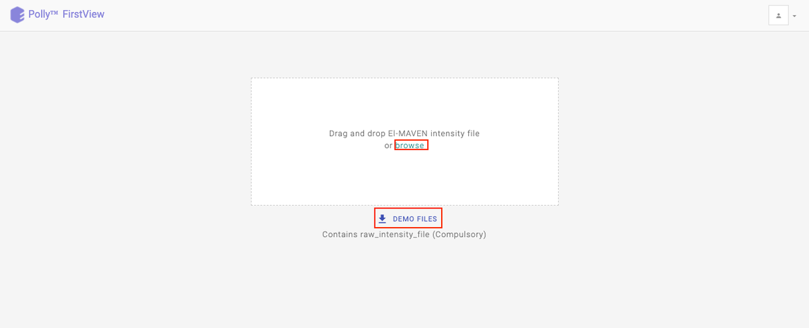
Upload your intensity file by either clicking on Browse or using the drag and drop functionality.
Visualization
The visualization interface provides the data summary (number of samples, groups and metabolites present in the uploaded data) and normalization on the left side whereas the rest of the interface provides the generated plots.
Intensity Plot
The Intensity Plot displays the intensity values either raw or log2 transformed, for a given metabolite across all samples. For labeled data, the intensity for all isotopologues are displayed in different colors in stacked bar plots as illustrated in Figure 8. below.
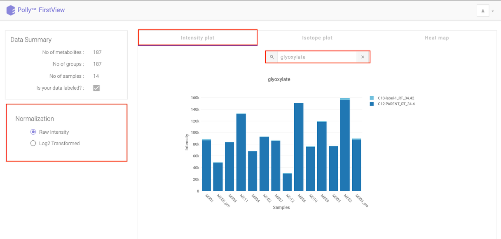
Click on the drop down to visualize the intensity for a different metabolite.
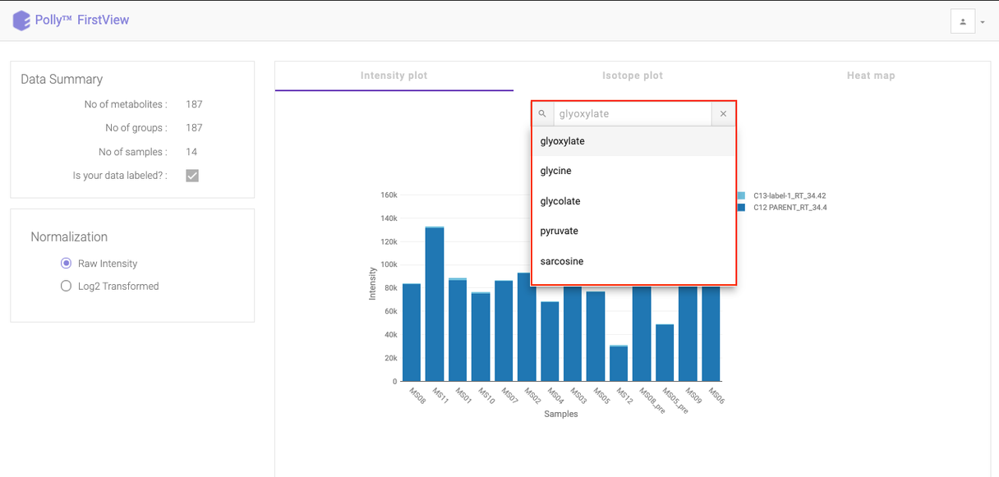
To see a normalized Intensity Plot, select the Log2 Transformed option in Normalization section. The plot would get updated to accommodate the normalized intensities.
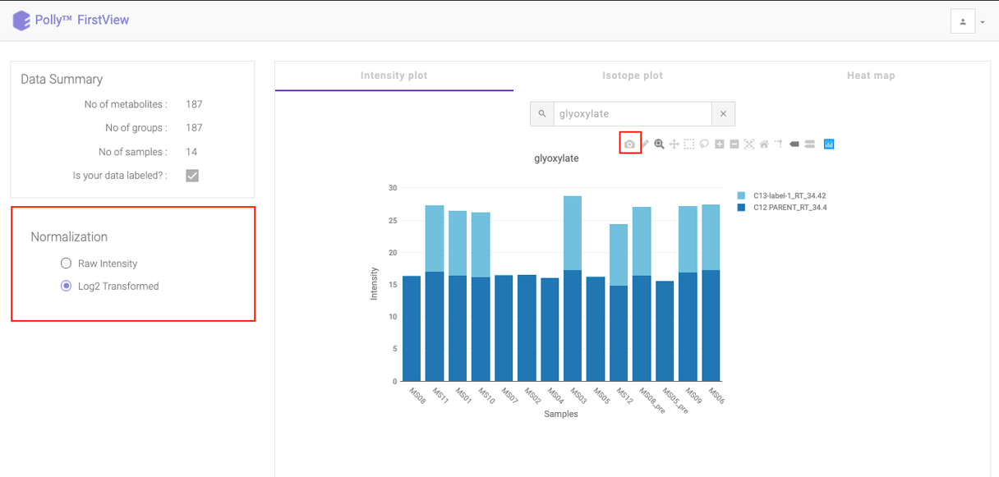
Isotope Plot
Click on Isotope Plot option beside Intensity Plot to see a fractional enrichment vs sample plot. The values seen are calculated as:
intensity of parent or isotopologue / sum (intensity of metabolite for a sample)
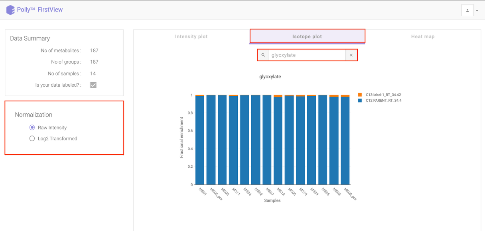
Heat map
Click on Heat map option beside Isotope Plot to open the heat map. Heat map is a graphical representation of data where the individual values contained in a matrix are represented as different colors corresponding to the intensity. Here, the heat map represents intensity value of each metabolite corresponding to the number of samples in the data.
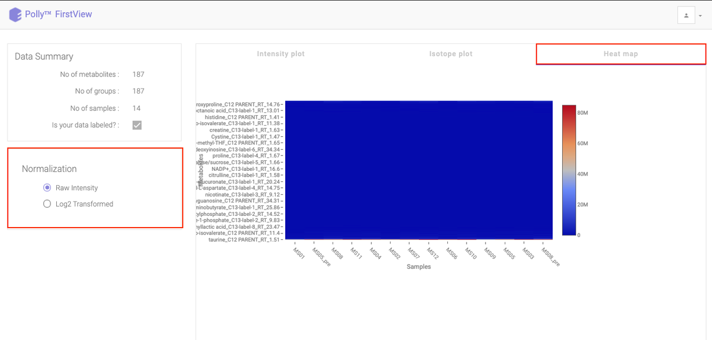
You can view this plot with both raw intensities and normalized intensities by choosing the desired normalization option from the left section of the page. Hovering over the plot will display the specific values.
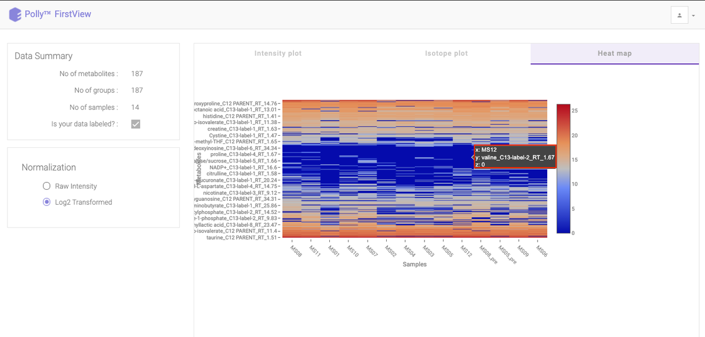